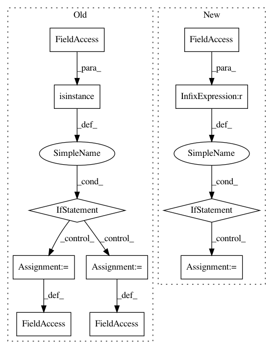

ecbf73f72b59f8f5c8746de63270aa1fb3ad7524,keras/callbacks.py,TensorBoard,on_epoch_end,#TensorBoard#Any#Any#,894
Before Change
continue
summary = tf.Summary()
summary_value = summary.value.add()
if isinstance(value, np.ndarray):
summary_value.simple_value = value.item()
else:
summary_value.simple_value = value
summary_value.tag = name
self.writer.add_summary(summary, epoch)
self.writer.flush()
After Change
i += self.batch_size
if self.update_freq == "epoch":
index = epoch
else:
index = self.samples_seen
self._write_logs(logs, index)
def _write_logs(self, logs, index):
for name, value in logs.items():
In pattern: SUPERPATTERN
Frequency: 3
Non-data size: 11
Instances
Project Name: keras-team/keras
Commit Name: ecbf73f72b59f8f5c8746de63270aa1fb3ad7524
Time: 2018-10-01
Author: gabrieldemarmiesse@gmail.com
File Name: keras/callbacks.py
Class Name: TensorBoard
Method Name: on_epoch_end
Project Name: sony/nnabla-examples
Commit Name: fc94cf593f218f4c3e715d8a2d58b324c2828007
Time: 2020-11-06
Author: Krishna.Wadhwani@sony.com
File Name: VAEs/vq-vae/trainers/train_prior.py
Class Name: TrainerPrior
Method Name: forward_pass
Project Name: home-assistant/home-assistant
Commit Name: e3307fb1c2eaf4ff05da8676d71d29b0500b312b
Time: 2017-05-23
Author: bernd@bjws.nl
File Name: homeassistant/components/sensor/hp_ilo.py
Class Name: HpIloSensor
Method Name: update